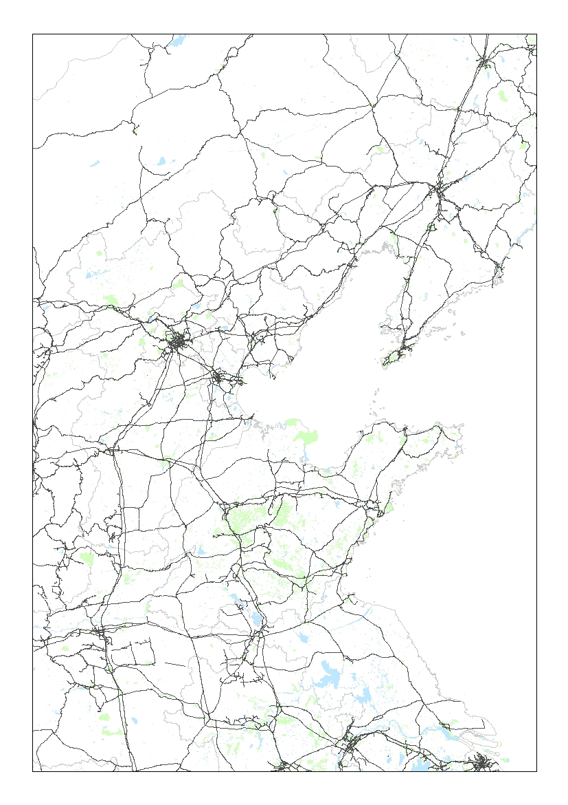
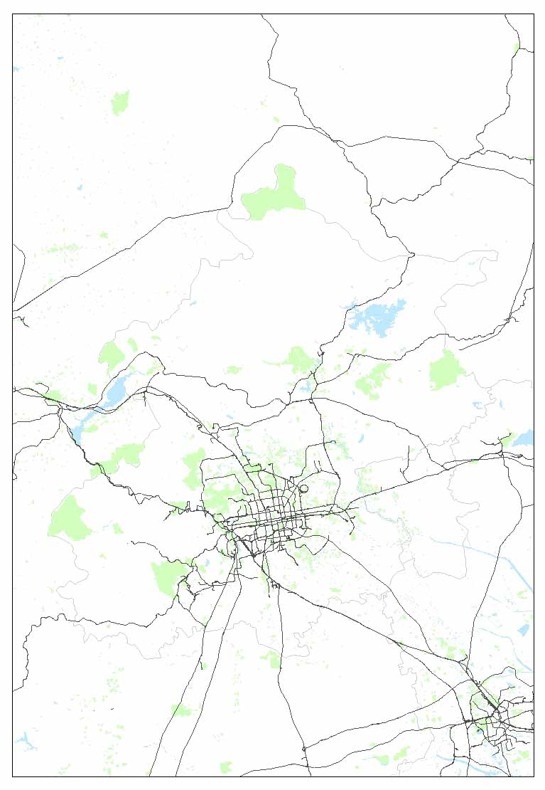
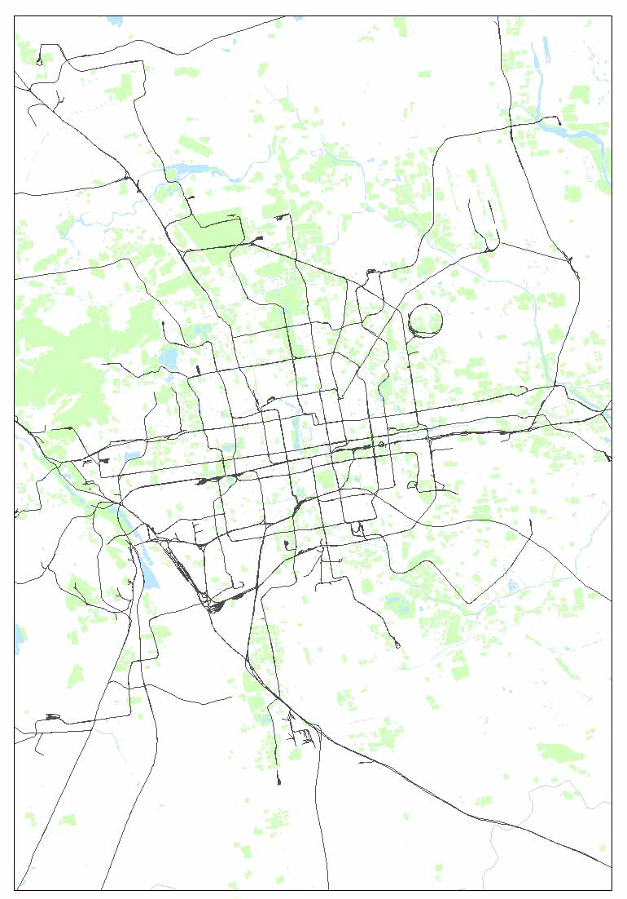
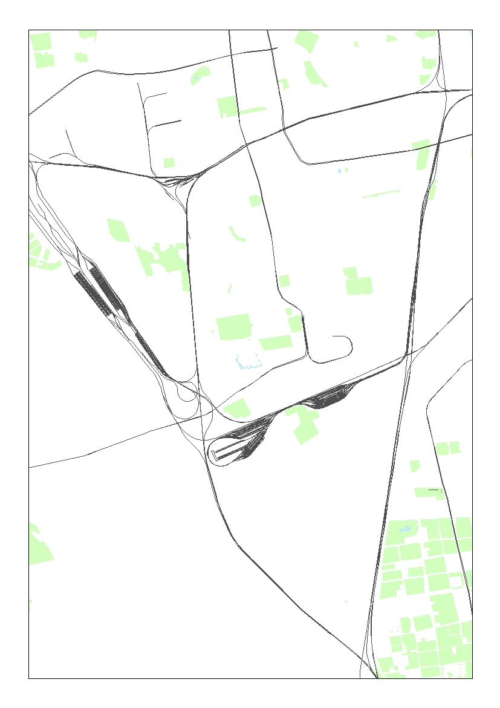
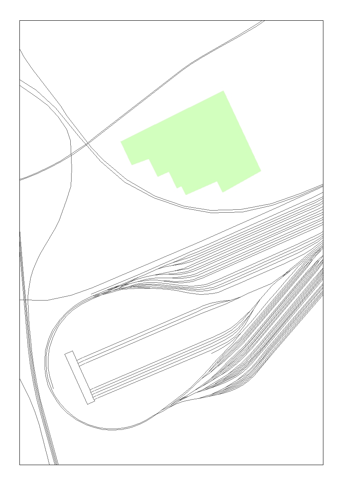
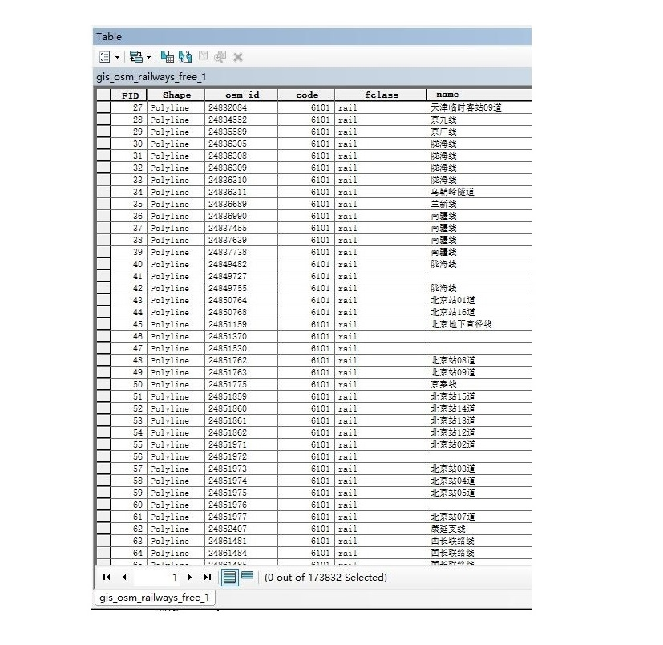

全国铁路网矢量数据集
Vector data set of fine railway network of China
数据概况
全国铁路网矢量数据集，包括城市间铁路线和市内地铁线等，数据来源于国家地理信息中心和Open Street Map，其中，国家基础地理信息中心的数据比例尺为1:100万，OSM的数据为开源数据，均具有非常高的精细度（可查看数据预览图），数据属性相对完整。
空间范围：全国（各省）
数据类型：矢量 | ESRI Shapefile
投影坐标：1:100万（2000国家大地坐标系） OSM（GCS WGS 1984）
生产时间：1:100万（2012|2015|2017） OSM（2017|2019|2020）
保密等级：公开
数据预览
总体预览图

多图预览
局部地区
京津冀地区
北京地区



北京市内铁路线
北京西站附近
图层属性表预览



数据下载
目前可供下载的省份或地区及相应数据列表如下，可按省级单位查找、下载。
中国省级行政区划可以参考 国家基础GIS数据
该数据为“有限共享”数据，不提供直接数据下载链接，需申请数据共享，获取共享口令，流程详见本站数据共享说明
请在申请表中填写具体应用或使用目的，我们会根据申请人填写的内容判断是否提供下载口令。如果是全国尺度的研究，请前往下载1:100万的数据（点击进入）。
仅提供省级地区数据的申请和下载，填写申请表时请标明省份或地区，以及数据年份和类型，否则无法提供下载口令~(´▽｀)。
如果省份超过2个，另行商议~
省级数据列表
| 编号 | 省级单位 | 缩略图 | 数据类型 | 共享口令 | 下载 |
|---|
需要说明的是，由于开源数据特点，矢量要素较为琐碎，必要时需做要素合并等处理。
2019年全国各省精细铁路网矢量数据集已全部完成上传，使用过程中如遇到任何数据问题，可以在页面下方评论区留言！
Fighting, GISer!
最新博文